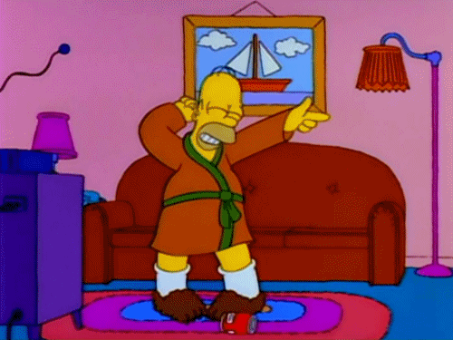
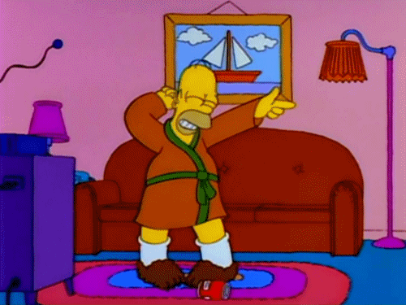
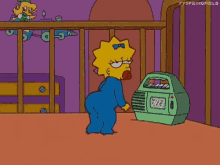
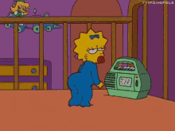

Homero
 

Es el padre de la familia Simpson y protagonista; tiene 39 años, es obeso, calvo y con poco sentido común, aunque ama a todos sus hijos, aun así, su relación con Bart muchas veces es temperamental y agresiva.
Lisa


Es la hija del medio en la familia. Tiene ocho años, es muy madura para su edad, aunque también es egocéntrica y siempre quiere ser completamente perfecta; en muchas ocasiones ha sido criticada por ser la opinión que a nadie le interesa oír y por su idealismo desenfocado que la lleva a participar en movimientos y actividades de protesta donde lejos de solo protestar incluso intenta imponer su punto de vista obligatoriamente como sucedería cuando se hizo vegetariana.
Maggie
 

Es la bebé y la menor de la familia. Tiene un año, y físicamente es la versión preescolar de Lisa. Tiene el cerebro de un constante infractor de la ley e incluso en varias ocasiones ha usado armas de fuego y agredido gente; a pesar de ello mantiene la inocencia y ternura de una bebé. Siempre demuestra un comportamiento más inteligente y despierto de lo que un niño de su edad debería tener.